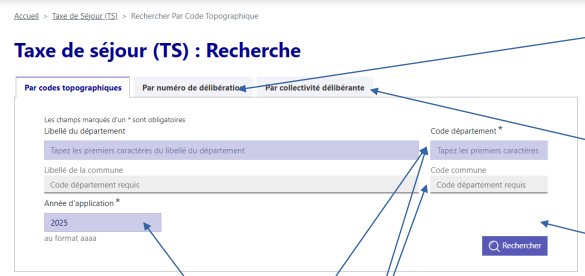
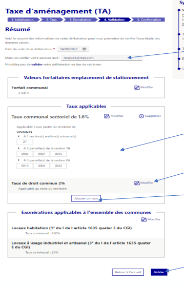
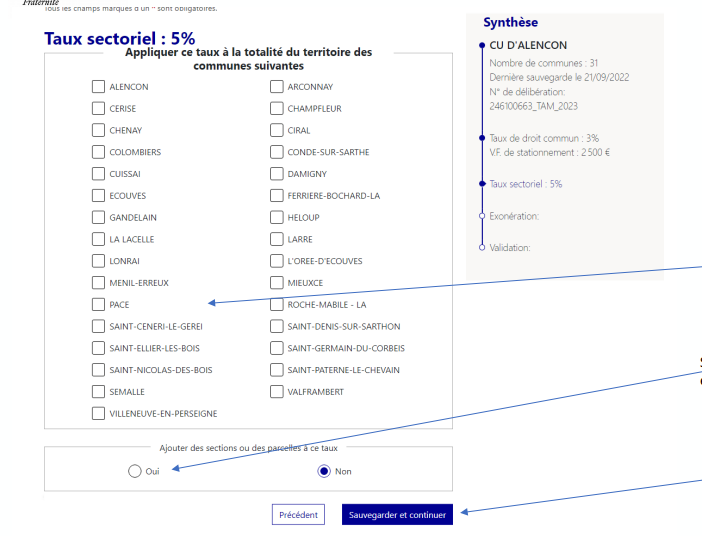

Ce que j’ai fait pendant le stage 2
Je travaille sur DELTA, j’avance en autonomie et je contribue à la fiabilité du service
Résumé (je détaille ce que j’ai fait)
J’ai progressivement renforcé mon autonomie : au début, j’ai surtout découvert le projet et les outils, puis j’ai pris en charge des parties concrètes, notamment la maintenance des tests automatisés.
Durant les premières semaines, je me suis concentré sur la prise en main de mon environnement (Ubuntu, VSCodium), la compréhension de l’organisation DELTA, et l’apprentissage de JavaScript. J’ai suivi des ressources structurées, puis j’ai commencé à travailler sur VueJS (via le framework interne CliR) : organisation des composants, communication (props / emits) et centralisation d’un état avec un Store.
Ensuite, j’ai développé des fonctionnalités front-end : j’ai créé une interface dynamique permettant d’ajouter, modifier et supprimer des données (CRUD local), et j’ai mis en place une interaction entre deux pages (un élément passe d’une liste à une autre via un bouton). J’ai aussi appris à rendre mon code plus maintenable : au début tout était dans un fichier pour comprendre rapidement, puis j’ai séparé le code dans plusieurs fichiers.
Pendant la suite du stage, j’ai pris une place plus active dans l’équipe. J’ai participé aux Daily Meetings, j’ai communiqué plus clairement mes blocages et mes hypothèses, et j’ai utilisé Jira pour le suivi. J’ai aussi travaillé sur des sujets connexes comme un script Python (CSV → JSON) réalisé avec l’aide de l’équipe après des recherches. Enfin, j’ai observé l’environnement SAS et les enjeux d’une migration progressive vers des solutions open source (formation, validation des résultats, sécurisation des processus).
Mes contributions principales se sont ensuite concentrées sur la maintenance des tests Selenium : j’ai corrigé des échecs liés aux erreurs de construction d’URL (paramètres mal ordonnés/incomplets), amélioré la robustesse des sélecteurs côté front (CSS selectors puis XPath, validation en console F12), et j’ai renforcé la fiabilité via un travail rigoureux sur les données. Comme je n’avais pas le droit de modifier la base, j’ai construit des requêtes SELECT complexes pour trouver des données exactement compatibles avec les scénarios. J’ai également utilisé Eclipse en mode Debug pour remonter à la cause racine et stabiliser les tests.
4 captures d’écran du site DELTA


